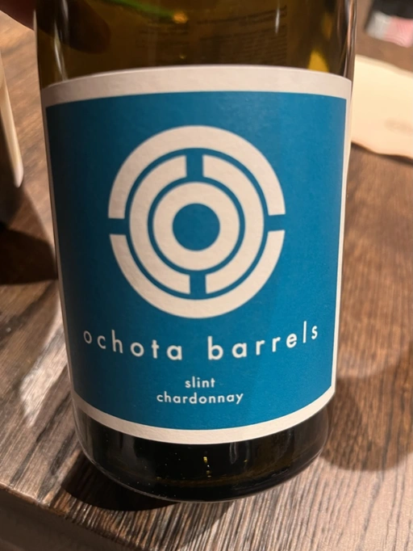
- Type
- White Still, Dry
- Producer
- Ochota barrels
- Vintage
- 2020
- Location
- Australia, Adelaide Hills
- Grapes
- Chardonnay
- Alcohol
- 13.3
- Sugar
- NA
- Price
- 1050 UAH
- Cellar
- N/A
Producer
Ochota barrels began as passion of Taras and Amber during their surf trip along the Mexican west coast in a Volkswagen campervan in late 2000. After visiting several amazing wineries and beautiful surf spots, they decided to make holistic wines back in their homeland in South Australia.
Ratings
2022-08-19 - 8.00
Tasted blind. My guess was some young Chablis. Let’s consider it to be praise for Ochota and Adelaide Hills. Shells, green apple, green apricot, ascorbic candy. Not overly complex, but delicious, well-balanced, with a pleasant salty aftertaste.
Related
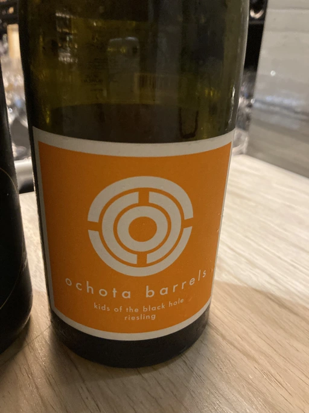
Ochota barrels
kids of the black hole - 2019
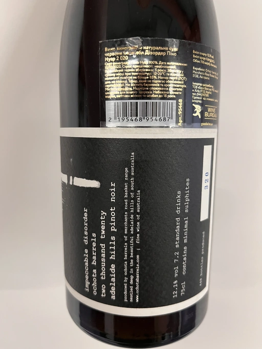
Ochota barrels
impeccable disorder - 2020
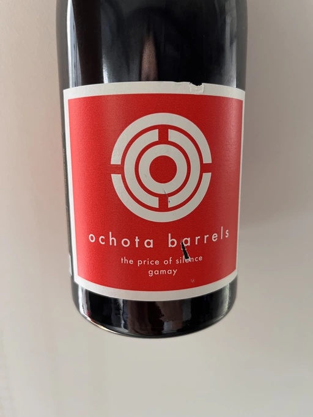
Ochota barrels
the price of silence gamay - 2019
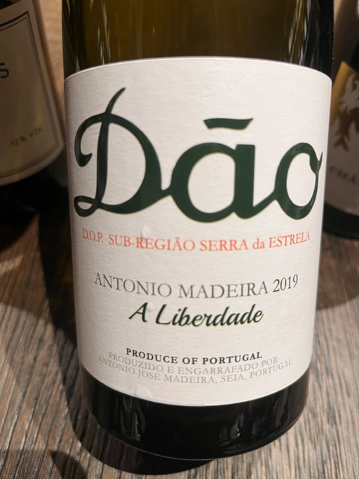
Antonio Madeira
A Liberdade - 2019
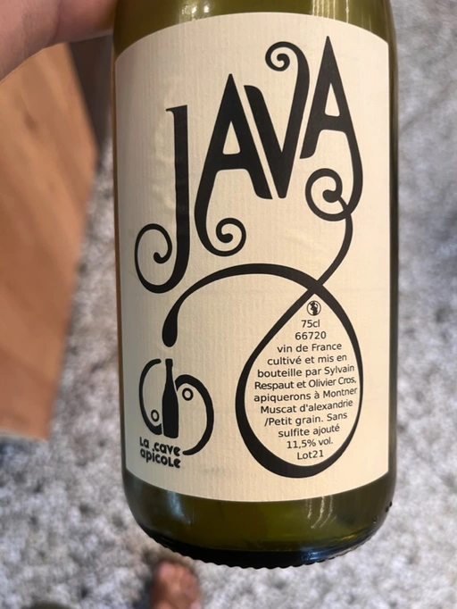
La Cave Apicole
Java - 2021
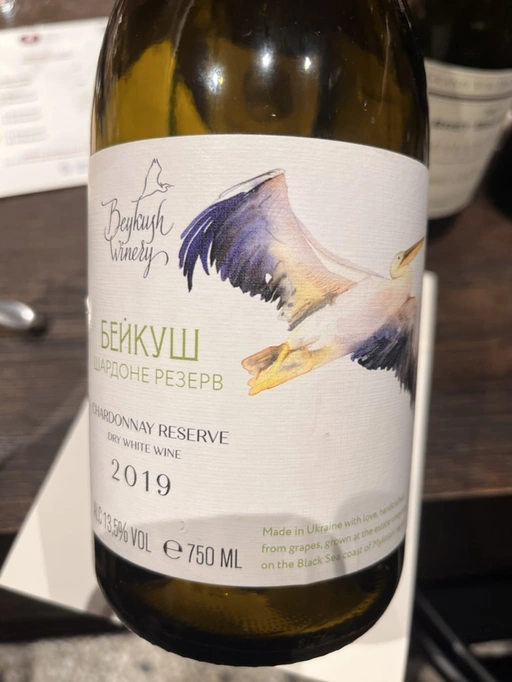
Beykush
Chardonnay Reserve - 2019
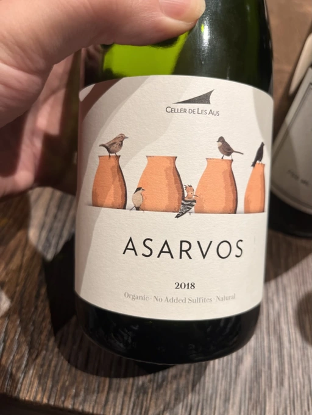
Alta Alella
Asarvos - 2018
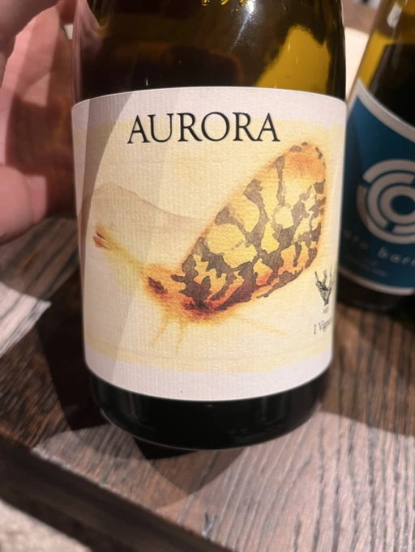
I Vigneri
Aurora - 2019
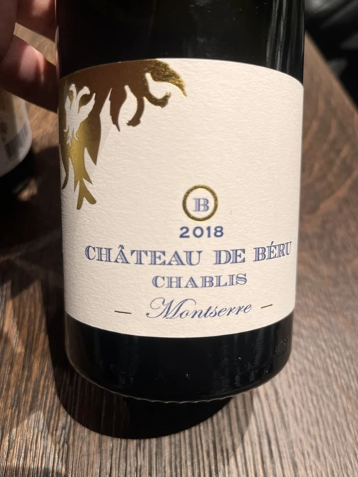
Château de Béru
Chablis Montserre - 2018
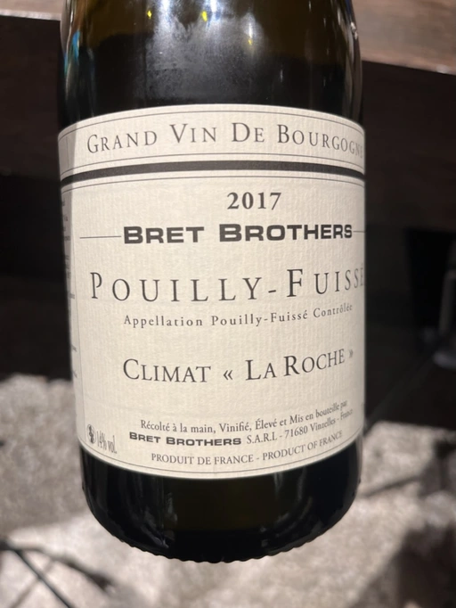
Bret Brothers
Pouilly-Fuissé Climat La Roche - 2017

Domaines Landron
Melonix - 2017
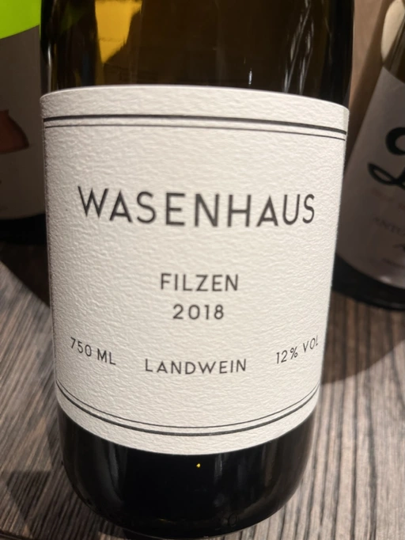
Wasenhaus
Filzen - 2018